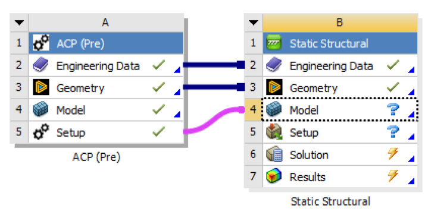
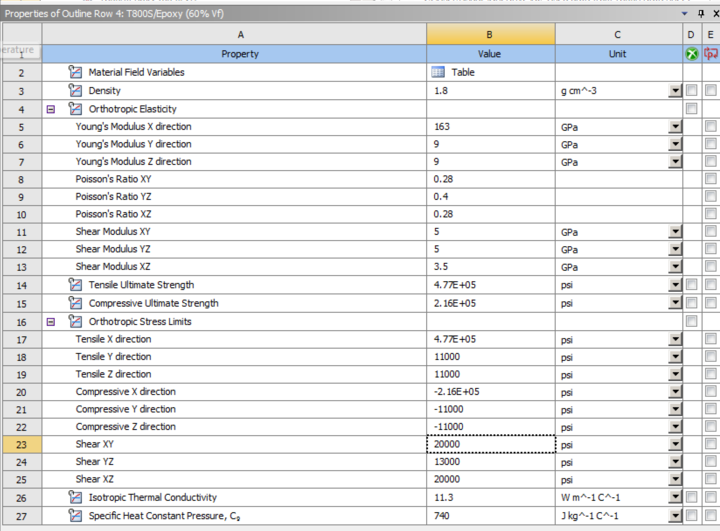
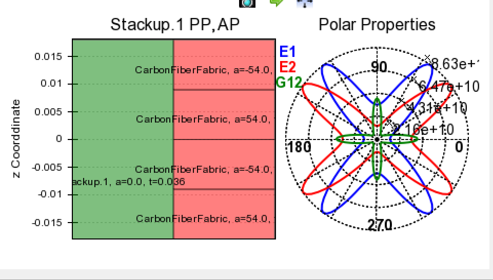
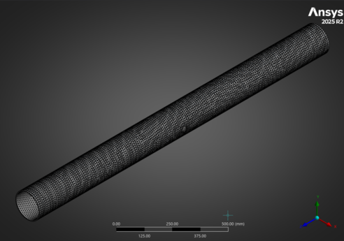
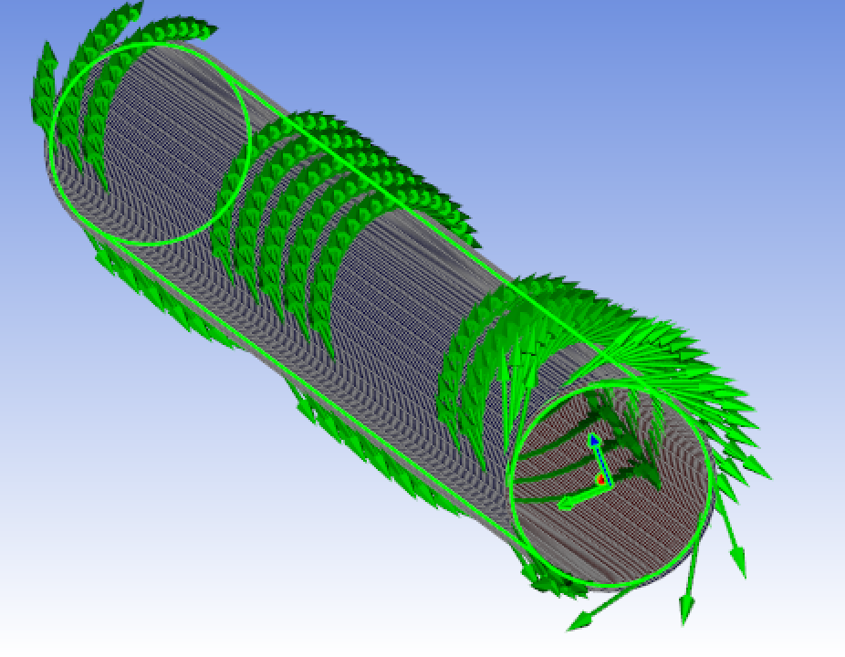
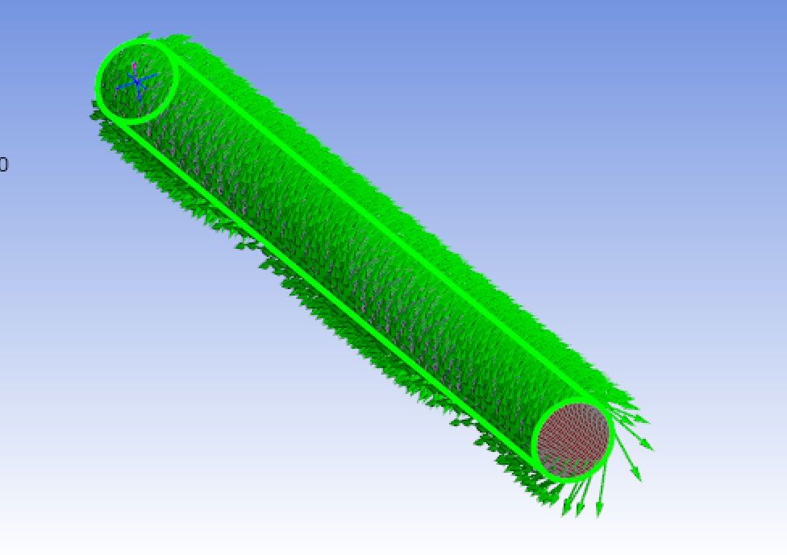
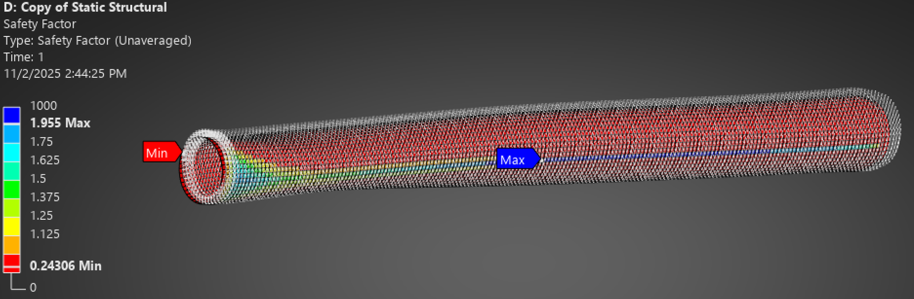
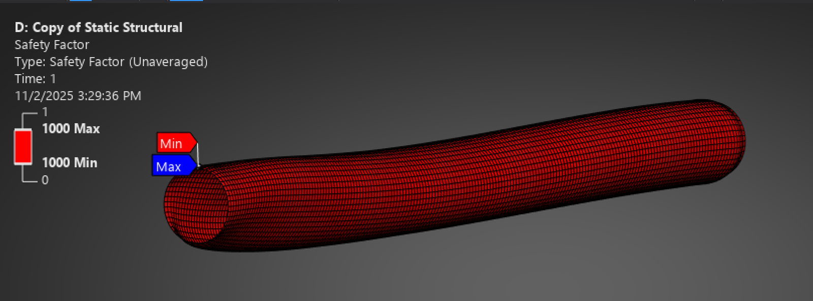
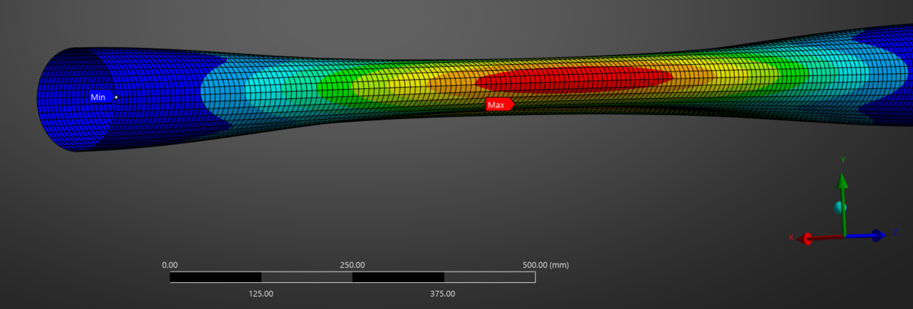

Carbon Fiber Motor Case FEA
I built a composite FEA model of the MIT Rocket Team's filament-wound carbon fiber motor case, teaching myself Ansys ACP to do it. The model starts from the winding layup: an orthotropic T800S/epoxy material, ±54° wound plies, and a shell mesh, run through static structural, composite failure, and modal analyses. The goal was to find how many layers the case needs for a factor of safety of 2. Hand calculations put that at about 8 layers, and the FEA results line up with them.
The Problem
A filament-wound carbon fiber case can be much lighter than a metal one, but its strength depends on the fiber angle and the number of layers, not just the wall thickness. The team needed an answer to one question: how many layers does the case need to reach a factor of safety of 2 under chamber pressure? A solid-tube model can't answer that. It takes a model that represents the laminate as it is actually wound.


Approach
Material. I defined T800S/epoxy at 60% fiber volume as an orthotropic material: 163 GPa along the fiber and 9 GPa transverse, plus directional stress limits, strain limits, and Tsai-Wu coupling coefficients. Where the spec sheet didn't give a value, I used a conservative estimate.
Layup. I used symmetric ±54° plies. That's close to the ~54.7° "netting" angle, where helical fibers balance the 2:1 hoop-to-axial stress in a pressurized cylinder. The stackup sets the ply order through the thickness, and I checked the laminate's effective stiffness in ACP's polar properties plot.
Pipeline. The ACP (Pre) setup feeds the Static Structural model, which maps the plies onto the shell surface rather than a solid. That's the right choice for a thin laminated wall. The shell uses a ~10 mm quad-dominant mesh. Loads are internal pressure with end supports and remote displacements. Failure comes from the Composite Failure Tool, because the standard safety-factor result is unavailable for layered shells. I ran a modal analysis alongside it.


What I Built
Getting the fibers right. My first rosette and oriented selection set produced fiber vectors that weren't tangent to the winding path, and they left gaps in coverage. When I dug in, I found ACP was picking up three rosettes where I'd defined one. I switched to ACP's Winding Wizard, which generates a geodesic winding layup (r·sinθ = constant) with automatic thickness correction. That gave continuous coverage that matches how the case is actually wound.


Plies vs. layers. Adding layers inside a ply didn't change the stress the way it should have. That showed me that the stackup, not each ply's layer count, controls the through-thickness sequence, so I restructured the layup.
Catching bad results. To test the pipeline, I ran it with a reference 230 GPa prepreg. With 10 layers, the safety factor across the barrel came out around 0.5. The lowest values sat right at the fixed support, which is where boundary conditions tend to produce misleading stress peaks, so I didn't treat that minimum as a real weak spot. When I switched to our T800S spec-sheet values, the safety factor jumped to the 1000 cap and stayed there even at 100× and 1000× the pressure. Since it didn't change with load, something in the model was wrong, so I went back to a known material to prove out the pipeline before bringing ours back in.


Modal. The first modes come in matching pairs (50.7, 50.7, 77.8, 77.8 Hz). That's what an axisymmetric tube should do, since it flexes the same way in any two perpendicular planes, and it's a useful sign that the geometry and layup are behaving consistently. The first-mode frequency is in the range a hand calculation predicts for this setup.

Where It Stands
Hand calculations put the case at about 8 layers for a factor of safety of 2. The FEA pipeline, which takes a wound layup from ACP through static structural, composite failure, and modal analyses, gives results consistent with that.
The carbon fiber case didn't make it into this motor. We couldn't get access to an oven to cure it before our go/no-go deadline, so carbon fiber is planned for a future motor. When it comes back, the model is ready to pick up. The next steps there are bringing our T800S properties back in, running a mesh convergence study, and adding pre-stressed modal (so chamber pressure stiffens the shell) with boundary conditions that match how the case mounts in flight.